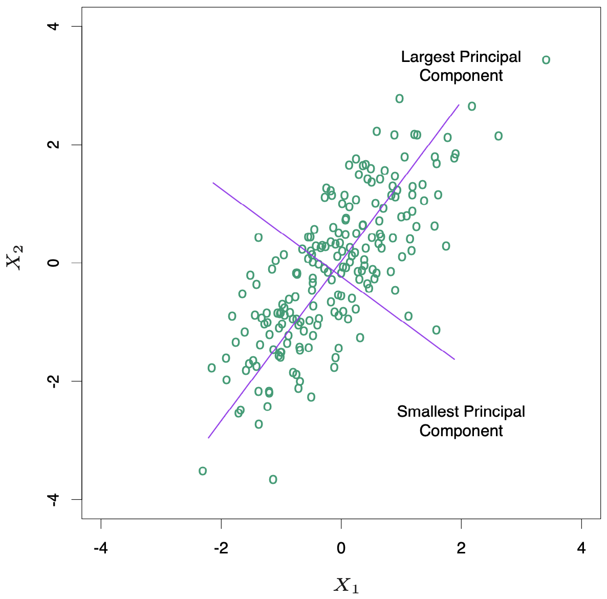
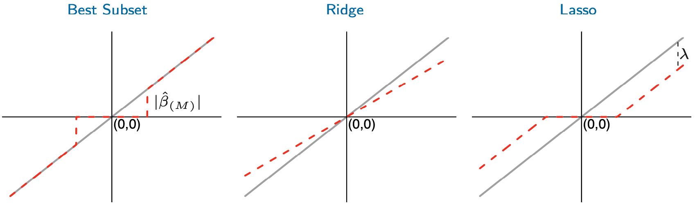
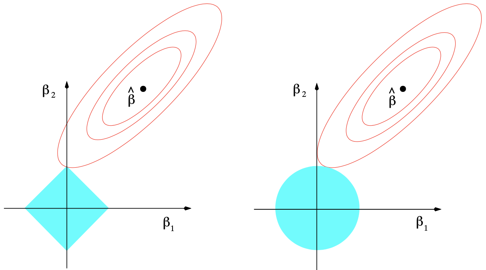

3.4 Shrinkage Methods¶
Subset selection is a discrete process -- variables are either retained or discarded -- it often exhibits high variance, and so doesn't reduce the prediction error of the full model. Shrinkage methods are more continuous, and don't suffer as much from high variability.
3.4.1 Ridge Regression¶
Ridge regression shrinks the regression coefficients by imposing a penalty on their size. The ridge coefficients minimize a penalized residual sum of squares,
The larger the value of \(\lambda > 0\), the greater the amount of shrinkage. The idea of penalizing by the sum-of-squares of the parameters is also used in neural networks, known as weight decay (Chapter 11).
An equivalent way to write the ridge problem is
There is a one-to-one correspondence between \(\lambda\) and \(t\). When there are many correlated variables in a linear regression model, their coefficients can become poorly determined and exhibit large variance. With ridge regression this problem can be alleviated.
The ridge solutions are not equivalent under scaling of the inputs, and so one normally standardizes the inputs. It can be shown (Exercise 3.5) that the solution to Equation (1) can be separated into two parts, after reparameterization using centered inputs: each \(x_{ij}\) gets replaced by \(x_{ij} - \bar{x}\). We estimate \(\beta_0\) by \(\bar{y}\). The remaining coefficients get estimated by a ridge regression without intercept, using the centered \(x_{ij}\).
Writing the criterion (Equation ref{eq:eq3-8}) in matrix form
The ridge regression solutions are easily seen to be
By adding a positive constant to the diagonal of \(\mathbf{X}^\top\mathbf{X}\) before inversion, the problem is made nonsingular.
Ridge regression can also be derived as the mean or mode of a posterior distribution, with a suitably chosen prior distribution. Suppose \(y_i \sim N(\beta_0 + x_i^\top\beta, \sigma^2)\), and the parameters \(\beta_j\) are each distributed as \(N(0, \tau^2)\), independently of one another. Then the (negative) log-posterior density of \(\beta\), with \(\tau^2\) and \(\sigma^2\) assumed known, is equal to
with \(\lambda = \sigma^2 / \tau^2\) (Exercise 3.6). Thus the ridge estimate is the mode of the posterior distribution; since the distribution is Gaussian, it is also the posterior mean.
Note
Singular Value Decomposition (SVD)
Singular value decomposition decomposes the \(N \times p\) matrix \(\mathbf{X}\) as
where \(\mathbf{U}\) and \(\mathbf{V}\) are \(N \times p\) and \(p \times p\) orthogonal matrices, with the columns of \(\mathbf{U}\) spanning the column space of \(\mathbf{X}\), and columns of \(\mathbf{V}\) spanning the row space. \(\mathbf{D}\) is a \(p \times p\) diagonal matrix, with diagonal entries \(d_1 \geq \dots \geq d_p \geq 0\) called the singular values of \(\mathbf{X}\). If one or more values \(d_j = 0\), \(\mathbf{X}\) is singular.
The singluar value decomposition (SVD) of the centered input matrix \(\mathbf{X}\) gives us some additional insight into the nature of ridge regression. We can write the least squares fitted vector as
Now the ridge solutions are
where \(\mathbf{u}_j\) are the columns of \(\mathbf{U}\). Like linear regression, ridge regression computes the coordinates of \(\mathbf{y}\) with respect to the orthogonal basis \(\mathbf{U}\). It then shrinks the coordinates by the factors \(d_j^2 / (d_j^2 + \lambda)\).
A greater amount of shrinkage is applied to the coordinates of basis vectors with smaller \(d_j^2\). The SVD of the centered matrix \(\mathbf{X}\) is another way of expressing the principal components of the variables in \(\mathbf{X}\). The sample covariance matrix is given by \(\mathbf{S} = \mathbf{X^\top X}/N\). We have
which is the eigne decomposition of \(\mathbf{X}^\top\mathbf{X}\). The eigenvectors \(v_j\) (columns of \(\mathbf{V}\)) are also called the principal components (or Karhunen-Loeve) directions of \(\mathbf{X}\). The first principal component direction \(v_1\) has the property that \(\mathbf{z}_1 = \mathbf{X}v_1\) has the largest sample variance amongst all normalized linear combinations of the columns of \(\mathbf{X}\). This variance is easily seen to be
and in fact \(\mathbf{z}_1 = \mathbf{X}v_1 = \mathbf{u}_1d_1\). The derived variable \(\mathbf{z}_1\) is called the first principal component of \(\mathbf{X}\) and hence \(\mathbf{u}_1\) is the normalized first principal component. Conversely the last principal component has minimum variance. Hence the small singular values \(d_j\) correspond to directions in the column space of \(\mathbf{X}\) having small variance, and ridge regression shrinks these directions the most.
The figure below illustrates the principal components of some data points in two dimensions. The configuration of the data allow us to determine its gradient more accurately in the long direction than the short. Ridge regression protects against the potentially high variance of gradients estimated in the short direction by shrinking the coefficients of low-variance components more than the high-variance components.
{kind=link}
The effective degrees of freedom of the ridge regression is defined by the quantity
Note that \(\text{df}(\lambda) = p\) when \(\lambda = 0\) (no regularization) and \(\text{df}(\lambda) \to 0\) as \(\lambda \to \infty\).
3.4.2 The Lasso¶
The Lasso estimate is defined by
In the signal processing literature, the lasso is also known as basis pursuit. We can also write the lasso problem in the equivalent Lagrangian form
The \(L_2\) ridge penalty is replaced by the \(L_1\) lasso penalty. This latter constraint makes the solutions nonlinear in the \(y_i\), and there is no closed form expression as in ridge regression.
Making \(t\) sufficiently small will cause some of the coefficients to be exactly zero. Thus the lasso does a kind of continuous subset selection. \(t\) should be adaptively chosen to minimize an estimate of expected prediction error.
3.4.3 Discussion: Subset Selection, Ridge Regression and the Lasso¶
In the case of an orthonormal input matrix \(\mathbf{X}\) the three procedures have explicit solutions. Each method applies a simple transformation to the least squares estimate \(\hat{\beta}_j\), as detailed in the table below. The effects of these transformation are visualized in the figure below.
Estimator |
Formula |
|---|---|
Best subset (size $M$) |
\(\hat{\beta}_j \cdot \mathbf{I}(\lvert \hat{\beta}_j \rvert \geq \lvert \hat{\beta}_{(M)} \rvert)\) |
Ridge |
\(\hat{\beta}_j / (1 + \lambda)\) |
Lasso |
\(\text{sign}(\hat{\beta}_j)(\lvert \hat{\beta}_j \rvert - \lambda)_+\) |
|:-:|:-:| | Best subset (size $M$) | $hat{beta}_j cdot mathbf{I}(lvert hat{beta}_j rvert geq lvert hat{beta}_{(M)} rvert)$ | | Ridge | $hat{beta}_j / (1 + lambda)$ | | Lasso | $text{sign}(hat{beta}_j)(lvert hat{beta}_j rvert - lambda)_+$ |
{kind=link}
Ridge regression does a proportional shrinkage. Lasso translates each coefficient by a constant factor \(\lambda\), truncating at zero. This is called "soft thresholding". Best-subset selection drops all variables with coefficients smaller than the \(M\) th largest; this is a form of "hard thresholding".
Back to nonorthogonal case. The figure below depicts the lasso and ridge regression where there are only two parameters. Both methods find the first point where the elliptical contours hits the constraint region.
{kind=link}
We can generalize ridge regression and the lasso, and view them as Bayes estimates. Consider the criterion
for \(q \geq 0\).
Thinking of \(\lvert \beta_j \rvert^q\) as the log-prior density for \(\beta_j\), these are also the equi-contours of the prior distribution of the parameters. The value \(q = 0\) corresponds to variable subset selection; \(q = 1\) corresponds to the lasso, while \(q = 2\) to ridge regression. The prior corresponding to the \(q = 1\) case is an independent double exponential (or Laplace) distribution for each input, with density \((1/2\tau)\exp(-\lvert\beta\rvert / \tau)\) and \(\tau = 1/\lambda\). The case \(q = 1\) is the smallest \(q\) such that the constraint region is convex.
In this view, the lasso, ridge regression, and best subset selection are Bayes estimates with different priors. Note, however, that they are derived as posterior modes, that is, maximizers of the posterior. It is more common to use the mean of the posterior as the Bayes estimate. Ridge regression is also the posterior mean, but the lasso and best subset selection are not.
Warning
Add some explanation here.
We might try using other values of $q$ besides 0, 1, or 2, such as values of \(q \in (1, 2)\), which suggest a compromise between the lasso and ridge regression. However, with \(q > 1\), \(\lvert \beta_j \rvert^q\) is differentiable at 0, and would not set coefficients exactly to zero. Zou and Hastie (2005) introduced the elastic-net penalty
a different compromise between ridge and lasso. The elastic-net selects variables like the lasso, and shrinks together the coefficients of correlated predictors like ridge. It also has considerable computational advantages over the \(L_q\) penalties. We discuss the elastic-net further in Section 18.4.
3.4.4 Least Angle Regression¶
Least angle regression (LAR) can be viewed as a kind of "democratic" version of forward stepwise regression. It uses a similar strategy, but only enters "as much" of a predictor as it deserves.
Algorithm 3.2 Least Angle Regression.
Standardize the predictors to have mean zero and unit norm. Start with the residual \(\mathbf{r} = \mathbf{y} - \bar{\mathbf{y}}\), \(\beta_1, \dots, \beta_p = 0\).
Find the predictor \(\mathbf{x}_j\) most correlated with \(\mathbf{r}\).
Move \(\beta_j\) from 0 towards its least-squares coefficient \(\langle \mathbf{x}_j, \mathbf{r}\rangle\), until some other competitor \(\mathbf{x}_k\) has as much correlation with the current residual as does \(\mathbf{x}_j\).
Move \(\beta_j\) and \(\beta_k\) in the direction defined by their joint least squares coefficient of the current residual on \((\mathbf{x}_j, \mathbf{x}_k)\), until some other competitor \(\mathbf{x}_l\) has as much correlation with the current residual.
Continue in this way until all \(p\) competitors have been entered. After \(\min(N-1, p)\) steps, we arrive at full least-squares solution.